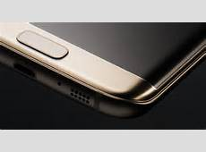

1. Wyœwietlacz
Always on display - Ekran Galaxy S7 mo¿e bez przerwy pokazywaæ u¿ytkownikowi najwa¿niejsze informacje,
takie jak czas czy powiadomienia. Przy wyœwietlaniu bia³ego napisu na czarnym tle,
ekran Super AMOLED flagowca zu¿ywa niewiele energii, wiêc wp³yw tej funkcjonalnoœci na czas pracy na baterii ma byæ znikomy.

Ekran 5,5" Super Amoled z rozdzielczoœci¹ QHD (2560*1440), czyli zagêszczenie pixeli równe 534 ppi
Samsung ten posiada równie¿ zagiêty ekran po obywdu stronach

2. Technologia
Dziêki bardzo wydajnym procesorom (8x2,3Ghz) Galaxy S7 i S7 edge dzia³aj¹ p³ynnie i szybko. Bez problemu radz¹ sobie ze wszystkimi danymi zapisanymi na karcie microSD.
Smartfon ten posiada równie¿ 4GB pamiêci RAM - podobnie jak w Galaxy S6 edge+ i Galaxy Note 5. Telefon nie powinien mieæ problemów z przegrzewaniem siê - specjalnie na ich potrzeby zaprojektowano nowy system ch³odzenia.
Wspania³a bateria z pojemnoœci¹ 3600 mAh, oraz funkcja szybkiego ³adowania, która zapeniwa na³adowanoie telefonu w oko³o 1,3h w 100%
Technologia IP68 zapewnia uszczelnienie wszystkich punktów styku z otoczeniem.Dziêki temu gniazda USB i s³uchawkowe mog¹ byæ otwarte.
3. Aparat
Jaœniejszy obiektyw F1.7 i du¿y rozmiar pikseli 1,4 µm w sensorze zapewniaj¹ wiêcej œwiat³a. Dziêki czemu zdjêcia wykonane Galaxy S7 i S7 edge s¹ ostre i wyraŸne nawet gdy warunki otoczenia s¹ niesprzyjaj¹ce.
Wszystkie piksele na sensorze obrazu posiadaj¹ dwie fotodiody zamiast jednej. Oznacza to, ¿e Dual Pixel Sensor mo¿e skupiæ siê tak szybko i tak dok³adnie jak ludzkie oko.
Najlepsze zdjêcia wymagaj¹ szybkiej reakcji. Zastosowana po raz pierwszy w smartfonach Samsung technologia Dual PIXEL pozwala na precyzyjny pomiar i szybsz¹ reakcjê autofokusu nawet w trudnych warunkach oœwietleniowych.
4. Skróty
KrawêdŸ ekranu to miejsce na a¿ 9 paneli, daj¹cych bezpoœredni dostêp do wszystkiego, czego potrzebujesz: od newsów sportowych po zamawianie taksówki. Dziêki bocznemu panelowi aplikacji mo¿esz utworzyæ do 10 skrótów.
Bez wzglêdu na to, czy chcesz zmierzyæ odleg³oœæ miêdzy biurkiem a œcian¹, czy poszukaæ czegoœ pod ³ó¿kiem, przyda siê edge screen, który mo¿e zmieniæ siê w linijkê, latarkê lub kompas.
5. Akcesoria